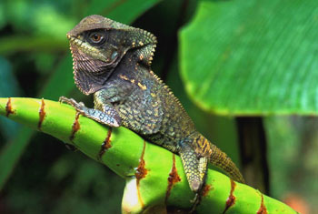
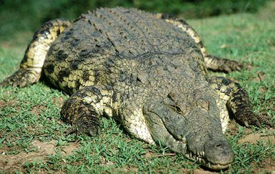
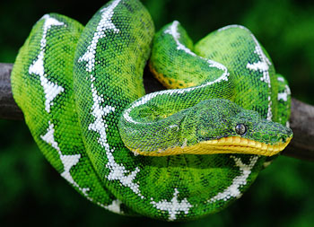
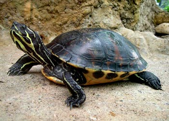

头骨全部骨化 ，外有膜成骨掩覆，以一个枕髁与脊柱相关联，颈部明显，第一、二枚颈椎特化为寰椎与枢椎，头部能灵活转动，胸椎连有胸肋，与胸骨围成胸廓以保护内脏。这是动物界首次出现的胸廓。腰椎与两枚以上的荐椎相关联，外接后肢 。除蛇类外 ，一般有两对5出的掌型肢（少数的前肢4出） ，水生种类掌形如桨 ，指、趾间连蹼以利于游泳，足部关节不在胫跗间而在两列跗骨间，成为跗间关节 。四肢从体侧横出 ，不便直立 ；体腹常着地面，行动是典型的爬行；只少数体型轻捷的能疾速行进。大脑小脑比较发达 。心脏3室（ 鳄类心室虽不完全隔开 ，但已为4室）。肾脏由后肾演变，后端有典型的泄殖肛腔，雌雄异体，有交接器 ，体内受精 ，卵生或卵胎生 。具骨化的腭 ，使口、鼻分腔，内鼻孔移至口腔后端；咽与喉分别进入食道和气管，从而呼吸与饮食可以同时进行。
|  |  |
|---|---|
|  |  |